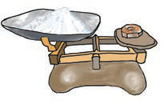
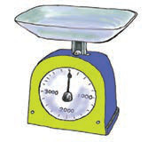
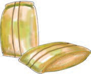
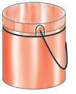
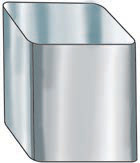
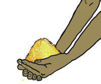

Tubaini vifaa rasmi vya kupima uzani
| mzani |  |
|---|---|
 |
Tubaini vifaa visivyo rasmi vya kupima uzani
Baadhi ya vipimo visivyo rasmi vya kupima uzani ni vifuatavyo:
| magunia |  |
|---|---|
| ndoo |  |
| debe |  |
| mikono |  |